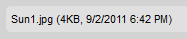

Li禳ta stavu (Status Bar) je um穩st?na v doln穩 ?獺sti rozhran穩 CKFinder, kter獺 zobrazuje informace o zvolen矇m souboru, celkov羸 po?et soubor轡 ve slo鱉ce, atd.
Pokud je v CKFinder vybr獺n soubor, Li禳ta stavu zobraz穩 podrobn矇 informace o tomto souboru, v?etn? jeho n獺zvu, velikosti a data jeho posledn穩 zm?ny. Nap?穩klad:

Pokud nejsou vybr獺ny 鱉獺dn矇 soubory, bude m穩sto toho v Li禳t? stavu zobrazen celkov羸 po?et soubor轡 v sou?asn矇 slo鱉ce. Nap?穩klad:

Pokud je slo鱉ka pr獺zdn獺, Li禳ta stavu zobraz穩 odpov穩daj穩c穩 zpr獺vu. Nap?穩klad: